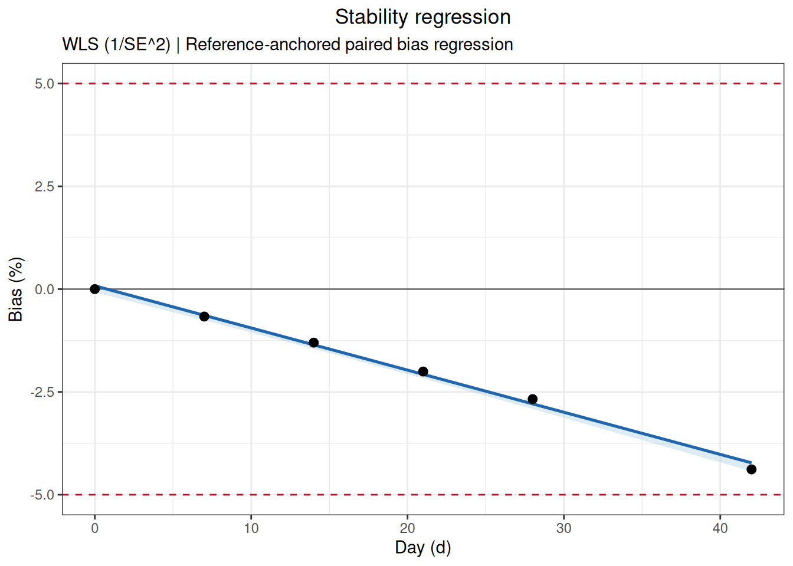
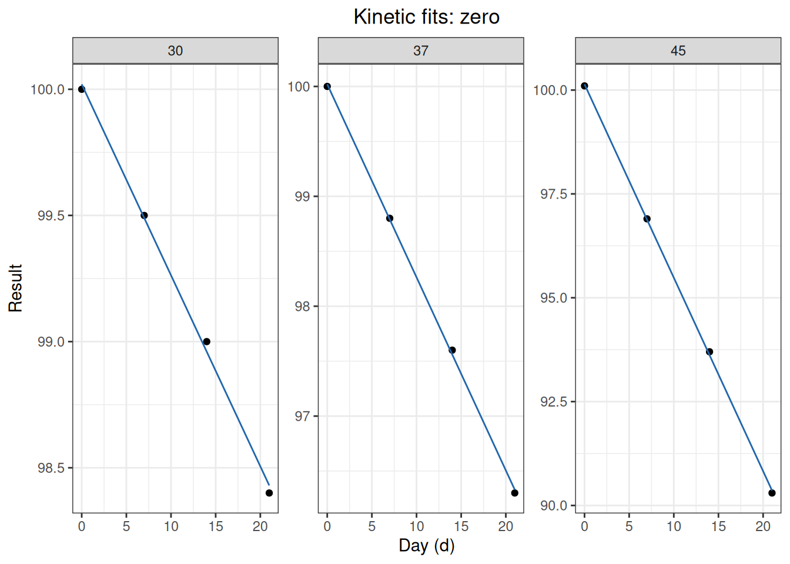
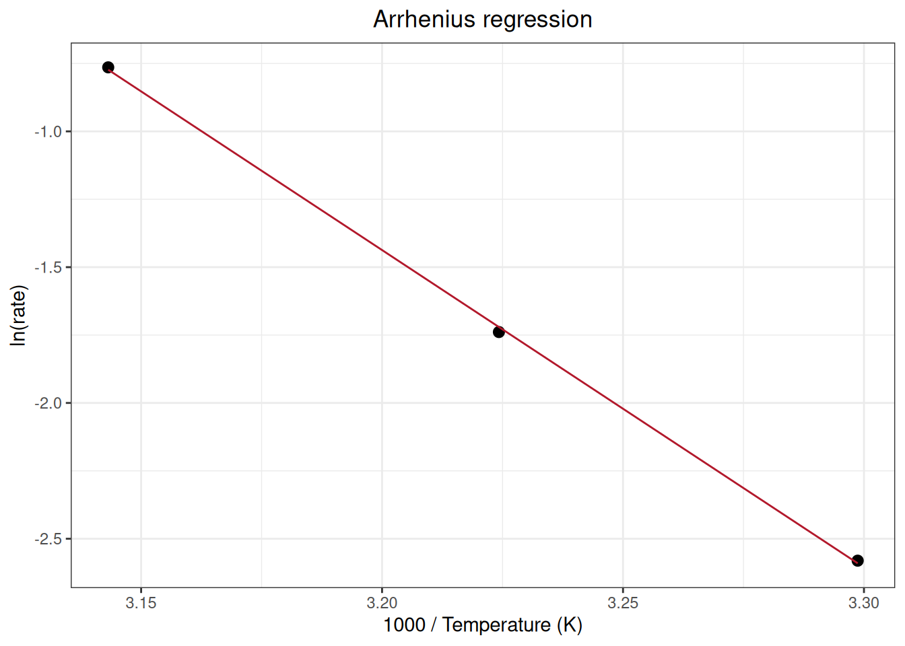
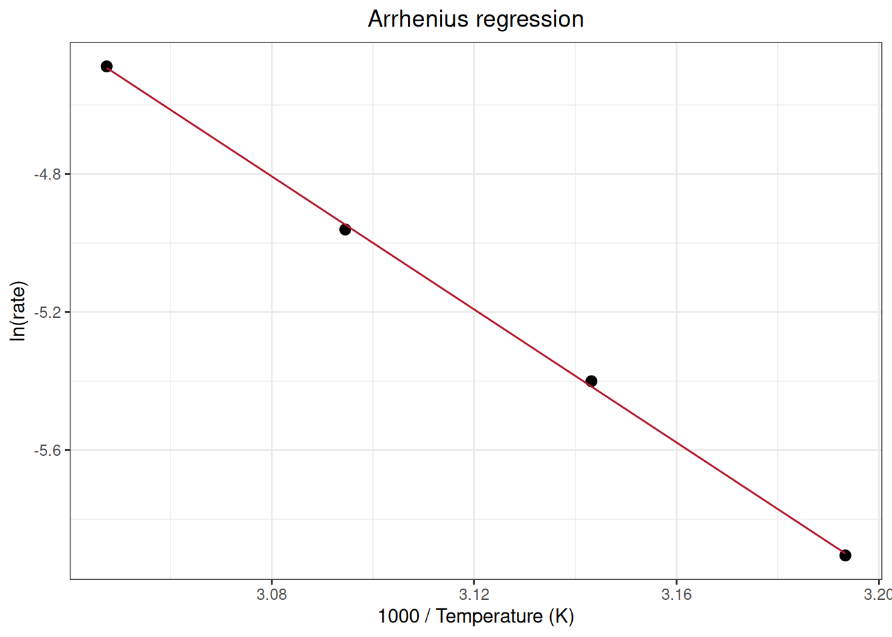
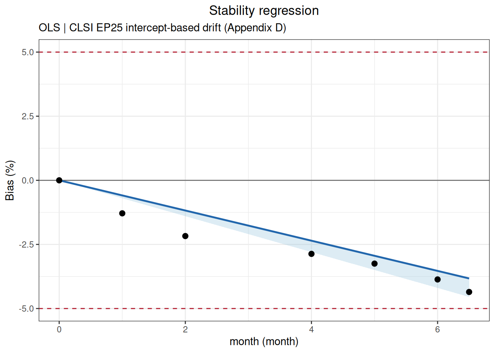
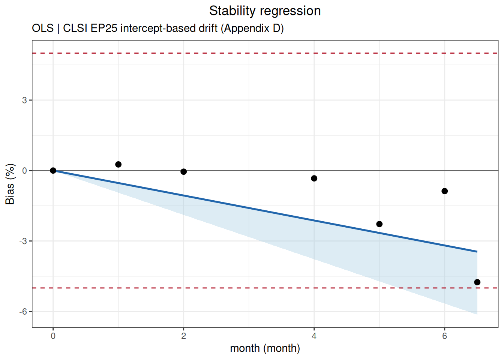
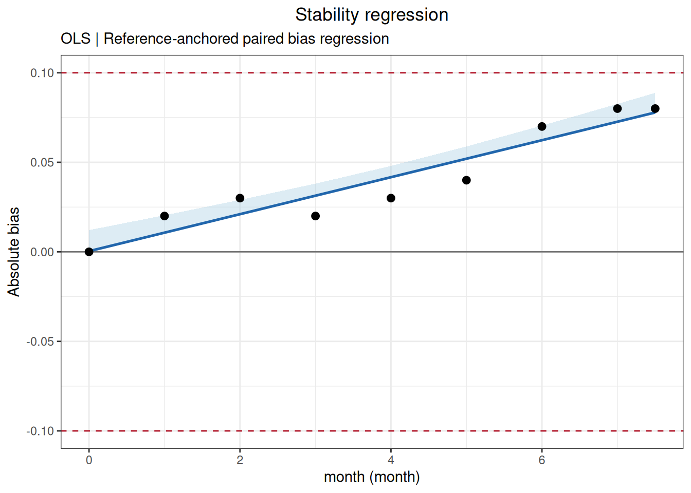

Code
library(ivdtools)
library(readr)Stability studies evaluate how measurement results change over time for reagents, calibrators, or QC materials under specified storage, transport, or use conditions. This chapter covers study planning, node bias, trends within and between conditions, time to an allowable limit, Arrhenius accelerated stability, and mean kinetic temperature (MKT).
Teaching data and illustrative limits in this chapter are deterministic examples, not universal acceptance criteria. Formal studies must use parameters specified by the protocol, risk assessment, and applicable standards. Decide in advance whether the response is concentration or signal, the time unit, bias scale, change direction, and allowable limit.
library(ivdtools)
library(readr)| Function | Main purpose | Key result |
|---|---|---|
stability_plan() |
Plan the minimum number of time points | Drift, variability, replicates, expected drift, power |
stability_bias() |
Calculate bias from the first node and between conditions | Node summaries and limit status |
stability_regression() |
Regress a single-condition trend or paired test/reference bias | Slope, one-sided limit, node results, diagnostics |
stability_time() |
Predict when a point estimate or one-sided limit reaches an allowable bias | Predicted time and extrapolation status |
arrhenius() |
Extrapolate target-temperature shelf life from elevated temperatures | Kinetic order, rate, activation energy, shelf life |
mkt() |
Calculate equally spaced or time-weighted mean kinetic temperature | Per-probe and combined MKT |
stability_regression() has two modes: mode="self" regresses one condition over time; mode="compare" calculates test-versus-reference bias at matched times and regresses the bias.
Suppose the protocol specifies an allowable relative drift of 5%, an expected drift of 2.5%, repeatability variability of 1.5%, and a target power of 90%. Compare the minimum number of time points required when 1, 2, or 3 replicates are measured at each time point:
plan <- stability_plan(
allowable_drift = 5,
variability = 1.5,
replicates = c(1, 2, 3),
expected_drift = 2.5,
power = 0.9,
mode = "simple",
bias_type = "relative"
)
print(plan)
Stability Study Time-Point Plan
Allowable drift: 5.0000; expected drift: 2.5000
Success target: 90%; method: CLSI EP25 Appendix A Table A2
Replicates Residual Allow/Resid Min nodes
------------------------------------------------
1 1.5000 3.3333 n/a
2 1.0607 4.5455 28
3 0.8660 5.7471 18
n/a -- No feasible entry in EP25 table.allowable_drift must be positive. In simple mode, variability is a relative CV/SD; in components mode, it can be a data frame of variance components. replicates can contain one or more replicate counts per time point. The returned stability_plan object provides time-point/sample-size recommendations for the requested power and replicate counts.
Read the raw data:
bias_data <- read_csv(
"./data/004-稳定性研究/stability-bias-example.csv",
show_col_types = FALSE
)
bias_result <- stability_bias(
data = bias_data, condition = "Condition", time = "Day",
value = "Result", reference_condition = "2-8C", limit = 5,
bias_type = "relative", time_unit = "d"
)
print(bias_result)
Stability Bias Analysis
Conditions: 2 (2-8C, 25C)
Reference: 2-8C
Time unit: d
Node comparisons:20
Acceptance: +/- 5.0000 (relative); 10/10 nodes passed
Within-condition bias (vs first node)
Cond Time Value Bias(%) Status
----------------------------------------------
2-8C 0.0000 100.0000 0.0000 Pass
2-8C 7.0000 99.9333 -0.0667 Pass
2-8C 14.0000 99.7333 -0.2667 Pass
2-8C 21.0000 99.5000 -0.5000 Pass
2-8C 28.0000 99.3333 -0.6667 Pass
25C 0.0000 100.0000 0.0000 Pass
25C 7.0000 99.2333 -0.7667 Pass
25C 14.0000 98.3333 -1.6667 Pass
25C 21.0000 97.2333 -2.7667 Pass
25C 28.0000 95.8333 -4.1667 Pass
Between-condition bias (reference: 2-8C)
Time Condition TestVal Bias(%)
--------------------------------------
0.0000 25C 100.0000 0.0000
7.0000 25C 99.2333 -0.7005
14.0000 25C 98.3333 -1.4037
21.0000 25C 97.2333 -2.2781
28.0000 25C 95.8333 -3.5235plot(bias_result)
The function summarizes the mean by condition and time and returns a stability_bias object containing node means, relative/absolute bias, the reference condition, and limit status. When reference_condition = NULL, the software selects a reference according to data order; formal analyses should specify it explicitly. Missing or non-finite observations are removed, and the cleaning record must be retained. Within-condition bias uses each condition’s first node as its baseline; between-condition bias compares the test and reference conditions at matched time points.
Read the raw data:
regression_data <- read_csv(
"./data/004-稳定性研究/stability-regression-example.csv",
show_col_types = FALSE
)
regression_result <- stability_regression(
data = regression_data, time = "Day", value = "Result",
condition = "Condition", mode = "compare", test_condition = "25C",
reference_condition = "2-8C", bias_type = "relative", direction = "decrease",
conf.level = 0.95, limit = 5, time_unit = "d"
)
print(regression_result)
Stability Regression
Mode: compare
Test condition: 25C
Reference: 2-8C
Fit: WLS (1/SE^2); intercept = 0.0799, slope = -0.1025
Direction: decrease
One-sided CI: 95.0%
R-squared: 0.9956
Cook distance: row(s) 6 > 1; not removed
Time ObsBias Estimate CI_limit Status
--------------------------------------------------
0.0000 0.0000 0.0799 -0.0750
7.0000 -0.6669 -0.6376 -0.7566
14.0000 -1.3013 -1.3552 -1.4522
21.0000 -2.0040 -2.0728 -2.1717
28.0000 -2.6747 -2.7904 -2.9140
42.0000 -4.3842 -4.2256 -4.4296 plot(regression_result)
The one-sided confidence limit evaluates the prespecified least-favorable direction. A large Cook’s distance is a diagnostic flag, not an automatic exclusion; review records and perform inclusion/exclusion sensitivity analysis when justified.
For a single condition relative to its first node, use mode="self" and test_condition. The observed first-node bias is fixed at zero, but a fitted regression line need not pass exactly through that point.
At each matched time point, calculate the relative bias of 25C against 2-8C and regress the bias over time. The example prespecifies a decreasing response, so it uses direction = "decrease".
mode = "self" uses the first node of one condition as the reference; mode = "compare" compares a test condition with a reference condition. With direction = "auto", the direction is inferred from the slope; a formal protocol should preferably specify decrease or increase explicitly. With limit = NULL, the model is fitted without an acceptance status.
The returned stability_regression object includes the fitted model, slope/intercept, direction, bias scale, confidence limits, observed time range, condition mapping, and exclusions. Use print() for a summary and plot() for the trend, bias, and confidence limit.
This example identifies a node with a large Cook’s distance, but the function does not delete it automatically. Review the original records, experimental process, and protocol, and perform sensitivity analyses with and without the node only when justified.
stability_regression()mode = "self" analyzes the change of one condition over time. The following example uses the regression data but selects only the 25C condition; each node’s observed_bias is calculated relative to the mean of the first node:
self_regression_result <- stability_regression(
data = regression_data,
time = "Day",
value = "Result",
condition = "Condition",
mode = "self",
test_condition = "25C",
bias_type = "relative",
direction = "decrease",
conf.level = 0.95,
limit = 5,
time_unit = "d"
)
print(self_regression_result)
Stability Regression
Mode: self
Test condition: 25C
Fit: WLS (1/SE^2); intercept = 100.0849, slope = -0.1115
Direction: decrease
One-sided CI: 95.0%
R-squared: 0.9966
Cook distance: row(s) 1, 6 > 1; not removed
Time ObsBias Estimate CI_limit Status
--------------------------------------------------
0.0000 0.0000 -0.0000 -0.0000
7.0000 -0.7000 -0.7797 -0.8278
14.0000 -1.4000 -1.5594 -1.6555
21.0000 -2.2000 -2.3391 -2.4833
28.0000 -2.9667 -3.1188 -3.3110
42.0000 -4.7667 -4.6782 -4.9665 plot(self_regression_result)
The observed bias at the first node is fixed at 0. The model estimate is fitted jointly from all time points, so the regression intercept is not required to pass exactly through that node.
stability_time() calculates separately the time when the point estimate and the one-sided confidence limit first reach a bias of −5%:
time_result <- stability_time(regression_result, limit = 5, max_time = 90)
print(time_result)
Stability Limit Time
Limit: 5.0000 (relative); direction: decrease
estimate 49.5548 d [EXTRAPOLATED]
one_sided_ci 47.2316 d [EXTRAPOLATED]plot(time_result)
If the predicted time lies beyond the longest observed time, the result is marked EXTRAPOLATED. Extrapolation assumes that the trend continues and is not equivalent to observed stability evidence.
The input must be a stability_regression object. The function evaluates the first time at which the point estimate or one-sided confidence limit reaches the threshold, returns a stability_time object, and marks whether the result is beyond the observed range. max_time is only a search bound, not a scientifically justified shelf life; substantial extrapolation requires separate justification.
The longest observed time in this example is 42 days, while the predicted limit time is beyond the observed range, so the output is marked EXTRAPOLATED. The extrapolation assumes that the linear trend continues outside the observed interval and is not equivalent to measured stability evidence. Report the extrapolation distance and uncertainty clearly, and preferably confirm it with longer real-time observations.
Read and inspect the raw data:
arrhenius_data <- read_csv(
"./data/004-稳定性研究/stability-arrhenius-example.csv",
show_col_types = FALSE
)
arrhenius_result <- arrhenius(
data = arrhenius_data, temperature = "Temperature", time = "Day",
value = "Result", target_temp = 5, order = "auto", direction = "decrease",
limit = 10, bias_type = "relative", temp_unit = "C", time_unit = "d",
conf.level = 0.95
)
print(arrhenius_result)
Arrhenius Stability Analysis
Kinetic order: zero (auto-selected)
Direction: decrease
Activation Ea: 97.159 kJ/mol
Target rate: 0.002346 /d
Limit time: 4263.7878 d [1585.3589, 11467.3633]plot(arrhenius_result)

order="auto" selects from zero- and first-order candidates under the implementation rules. Formal work should justify kinetic order, degradation direction, rate significance, extent of degradation, residuals at each temperature, and the potentially large extrapolation to the target temperature.
mkt_data <- read_csv(
"./data/004-稳定性研究/stability-mkt-example.csv",
show_col_types = FALSE
)
mkt_data$Timestamp <- as.POSIXct(
mkt_data$Timestamp, format = "%Y-%m-%d %H:%M:%S", tz = "UTC"
)
mkt_result <- mkt(
data = mkt_data, temp_cols = c("Probe_A", "Probe_B"),
time = "Timestamp", temp_unit = "C", ea = 83.144
)
print(mkt_result)
Mean Kinetic Temperature
Ea: 83.144 kJ/mol
Method: Time-weighted trapezoidal MKT
Probe_A 299.538 K 26.388 C
Probe_B 299.194 K 26.044 C
Combined 299.367 K 26.217 CMKT is not an arithmetic temperature mean; high temperatures receive greater weight through the Arrhenius relationship. Confirm probe calibration, time ordering, missing intervals, temperature units, exposure duration, and activation energy. MKT summarizes exposure and cannot replace a product-specific stability study.
mkt() returns the mean kinetic temperature for each probe and for the combined series. When time is supplied, observations are weighted by their time intervals; otherwise equal spacing is assumed. ea is the assumed activation energy in kJ/mol and must be reported.
When different concentration levels, sample types, or lots must be evaluated separately, retain the sample identifier, split the data first, and analyze each sample with the same prespecified parameters. Read and inspect the multiple-sample data:
multiple_samples_data <- read_csv(
"./data/004-稳定性研究/stability-multiple-samples-example.csv",
show_col_types = FALSE
)
head(multiple_samples_data, 6)# A tibble: 6 × 4
Sample Day Replicate Result
<chr> <dbl> <dbl> <dbl>
1 Sample_A 0 1 100.
2 Sample_A 0 2 99.8
3 Sample_A 0 3 100
4 Sample_A 7 1 99.7
5 Sample_A 7 2 99.5
6 Sample_A 7 3 99.8Use split_by_factors() to build a named list by a classification column. The function keeps the split column, uses the observed sample values as list names, and reports the number of rows in each group and the rows excluded because the grouping value was missing:
sample_data_list <- split_by_factors(
multiple_samples_data,
variable = "Sample"
)
sample_data_list
Data split by factors
Variable: Sample
Groups: 2
Missing/excluded: 0
Sample_A n = 18
Sample_B n = 18sample_a_data <- sample_data_list[["Sample_A"]]Then run the analysis for each sample.
Appendix B provides accelerated-stability data for a control material at 40, 45, 50, and 55 °C. The target storage temperature is 25 °C and the allowable decrease is 20%. The standard first log-transforms the results at each temperature and fits first-order kinetics, then uses the Arrhenius model to extrapolate the reaction rate and shelf life at 25 °C.
Read and inspect the raw data:
ep25_b_data <- read_csv(
"./data/004-稳定性研究/std-ep25-appendix-b.csv",
show_col_types = FALSE
)
head(ep25_b_data, 6)# A tibble: 6 × 3
Temperature Day Result
<dbl> <dbl> <dbl>
1 40 0 1.02
2 40 10 0.956
3 40 21 0.945
4 40 31 0.933
5 40 42 0.908
6 40 52 0.86 Analyze with the first-order model, decreasing direction, 20% allowable change, and 25 °C target temperature specified by Appendix B:
ep25_b_result <- arrhenius(
data = ep25_b_data,
temperature = "Temperature",
time = "Day",
value = "Result",
target_temp = 25,
order = "first",
direction = "decrease",
limit = 20,
bias_type = "relative",
temp_unit = "C",
time_unit = "d",
conf.level = 0.95
)
print(ep25_b_result)
Arrhenius Stability Analysis
Kinetic order: first
Direction: decrease
Activation Ea: 80.160 kJ/mol
Target rate: 0.000582 /d
Limit time: 383.1423 d [330.8315, 443.7244]
WARNING: Observed degradation exceeds 20% at one or more temperatures.plot(ep25_b_result)

Extract the degradation rates at each temperature, the Arrhenius regression coefficients, the target rate at 25 °C, and the shelf life from the arrhenius() result, then compare them with the values reported in Appendix B:
| appendix | statistic | standard | ivdtools |
|---|---|---|---|
| EP25-A2 Appendix B / 40C | rate | 2.7257e-03 | 0.0027257 |
| EP25-A2 Appendix B / 45C | rate | 4.5154e-03 | 0.0045154 |
| EP25-A2 Appendix B / 50C | rate | 7.0087e-03 | 0.0070087 |
| EP25-A2 Appendix B / 55C | rate | 1.1243e-02 | 0.0112430 |
| EP25-A2 Appendix B / Arrhenius | slope | -9.6320e+03 | -9640.9966367 |
| EP25-A2 Appendix B / Arrhenius | intercept | 2.4874e+01 | 24.8877147 |
| EP25-A2 Appendix B / 25C | target_rate | 5.8250e-04 | 0.0005824 |
| EP25-A2 Appendix B / 25C | shelf_life | 3.8300e+02 | 383.1423039 |
Appendix C1 contains single-lot reagent data covering 0–418 days, with a claimed period of 364 days and an allowable drift of 10%. Each of the three series is represented by the mean at each time point; here they are analyzed with stability_regression() in self mode, using relative bias and a decreasing direction.
ep25_c1 <- read_csv(
"./data/004-稳定性研究/std-ep25-appendix-c1.csv",
show_col_types = FALSE
)
head(ep25_c1, 6)# A tibble: 6 × 3
series day result
<chr> <dbl> <dbl>
1 low_panel 0 7.07
2 low_panel 33 6.95
3 low_panel 61 6.99
4 low_panel 95 6.88
5 low_panel 121 6.98
6 low_panel 155 6.83ep25_c1_list <- split_by_factors(
ep25_c1,
variable = "series"
)
ep25_c1_list
Data split by factors
Variable: series
Groups: 3
Missing/excluded: 0
low_panel n = 13
low_control n = 13
high_control n = 13Analyze the series with stability_regression():
ep25_low_panel <- stability_regression(
ep25_c1_list$low_panel,
time = "day", value = "result", mode = "self",
bias_type = "relative", direction = "decrease",
conf.level = 0.95, limit = 10, time_unit = "d"
)
ep25_low_control <- stability_regression(
ep25_c1_list$low_control,
time = "day", value = "result", mode = "self",
bias_type = "relative", direction = "decrease",
conf.level = 0.95, limit = 10, time_unit = "d"
)
ep25_high_control <- stability_regression(
ep25_c1_list$high_control,
time = "day", value = "result", mode = "self",
bias_type = "relative", direction = "decrease",
conf.level = 0.95, limit = 10, time_unit = "d"
)Compare the calculated results with the values reported in the standard:
| appendix | statistic | standard | ivdtools |
|---|---|---|---|
| EP25-A2 Appendix C1 / low_panel | slope | -0.001567 | -0.001567 |
| EP25-A2 Appendix C1 / low_panel | intercept | 7.065000 | 7.065100 |
| EP25-A2 Appendix C1 / low_panel | change_364 | -8.070000 | -8.074378 |
| EP25-A2 Appendix C1 / low_panel | change_364_upper_CL | -9.260000 | -9.262841 |
| EP25-A2 Appendix C1 / low_panel | change_418 | -9.270000 | -9.272226 |
| EP25-A2 Appendix C1 / low_panel | change_418_upper_CL | -10.640000 | -10.636999 |
| EP25-A2 Appendix C1 / low_control | slope | -0.002873 | -0.002873 |
| EP25-A2 Appendix C1 / low_control | intercept | 25.270000 | 25.268365 |
| EP25-A2 Appendix C1 / low_control | change_364 | -4.140000 | -4.139278 |
| EP25-A2 Appendix C1 / low_control | change_364_upper_CL | -5.130000 | -5.129081 |
| EP25-A2 Appendix C1 / low_control | change_418 | -4.750000 | -4.753346 |
| EP25-A2 Appendix C1 / low_control | change_418_upper_CL | -5.890000 | -5.889988 |
| EP25-A2 Appendix C1 / high_control | slope | -0.009103 | -0.009103 |
| EP25-A2 Appendix C1 / high_control | intercept | 99.740000 | 99.742806 |
| EP25-A2 Appendix C1 / high_control | change_364 | -3.320000 | -3.321944 |
| EP25-A2 Appendix C1 / high_control | change_364_upper_CL | -4.170000 | -4.166660 |
| EP25-A2 Appendix C1 / high_control | change_418 | -3.810000 | -3.814759 |
| EP25-A2 Appendix C1 / high_control | change_418_upper_CL | -4.780000 | -4.784791 |
Proportional drift is an analysis definition. After reading the data, calculate it explicitly as on_test / reference, then split the data by level:
ep25_c2_1_data <- read_csv(
"./data/004-稳定性研究/std-ep25-appendix-c2-1.csv",
show_col_types = FALSE
)
head(ep25_c2_1_data, 6)# A tibble: 6 × 4
level month on_test reference
<chr> <dbl> <dbl> <dbl>
1 low 0 1.01 1.00
2 low 1 0.999 1.00
3 low 2 0.992 1.01
4 low 4 0.983 1.00
5 low 5 0.985 1.01
6 low 6 0.97 1.00ep25_c2_1_data$proportional_drift <-
ep25_c2_1_data$on_test / ep25_c2_1_data$reference
ep25_c2_1_list <- split_by_factors(
ep25_c2_1_data,
variable = "level"
)
ep25_c2_1_list
Data split by factors
Variable: level
Groups: 2
Missing/excluded: 0
low n = 7
high n = 7Analyze the two calibrator levels sequentially with stability_regression():
ep25_c2_1_low_result <- stability_regression(
data = ep25_c2_1_list$low,
time = "month",
value = "proportional_drift",
mode = "self",
bias_type = "relative",
direction = "decrease",
limit = 5,
time_unit = "month",
conf.level = 0.95
)
ep25_c2_1_high_result <- stability_regression(
data = ep25_c2_1_list$high,
time = "month",
value = "proportional_drift",
mode = "self",
bias_type = "relative",
direction = "decrease",
limit = 5,
time_unit = "month",
conf.level = 0.95
)
ep25_c2_1_low_time <- stability_time(
ep25_c2_1_low_result,
max_time = 20
)
ep25_c2_1_high_time <- stability_time(
ep25_c2_1_high_result,
max_time = 20
)
print(ep25_c2_1_low_result)
Stability Regression
Mode: self
Test condition: condition
Fit: OLS; intercept = 1.0020, slope = -0.0059
Direction: decrease
One-sided CI: 95.0%
R-squared: 0.9566
Cook distance: row(s) 1 > 1; not removed
Note: WLS unavailable; OLS used.
Time ObsBias Estimate CI_limit Status
--------------------------------------------------
0.0000 0.0000 -0.0000 -0.0000
1.0000 -1.2873 -0.5887 -0.6995
2.0000 -2.1737 -1.1775 -1.3989
4.0000 -2.8683 -2.3549 -2.7978
5.0000 -3.2483 -2.9437 -3.4973
6.0000 -3.8659 -3.5324 -4.1968
6.5000 -4.3541 -3.8268 -4.5465 print(ep25_c2_1_high_result)
Stability Regression
Mode: self
Test condition: condition
Fit: OLS; intercept = 1.0078, slope = -0.0054
Direction: decrease
One-sided CI: 95.0%
R-squared: 0.5652
Cook distance: row(s) 7 > 1; not removed
Note: WLS unavailable; OLS used.
Time ObsBias Estimate CI_limit Status
--------------------------------------------------
0.0000 0.0000 -0.0000 -0.0000
1.0000 0.2612 -0.5317 -0.9441
2.0000 -0.0475 -1.0633 -1.8881
4.0000 -0.3329 -2.1266 -3.7763
5.0000 -2.2787 -2.6583 -4.7204
6.0000 -0.8759 -3.1900 -5.6644 *
6.5000 -4.7539 -3.4558 -6.1365 *plot(ep25_c2_1_low_result)
plot(ep25_c2_1_high_result)
Compare the results with the standard:
| appendix | statistic | standard | ivdtools |
|---|---|---|---|
| EP25-A2 Appendix C2.1 / low_calibrator | change_6 | -3.53 | -3.532421 |
| EP25-A2 Appendix C2.1 / low_calibrator | change_6_upper_CL | -4.20 | -4.196768 |
| EP25-A2 Appendix C2.1 / low_calibrator | change_6.5 | -3.83 | -3.826789 |
| EP25-A2 Appendix C2.1 / low_calibrator | change_6.5_upper_CL | -4.55 | -4.546498 |
| EP25-A2 Appendix C2.1 / low_calibrator | ci_limit_time | 7.10 | 7.148359 |
| EP25-A2 Appendix C2.1 / high_calibrator | change_6 | -3.19 | -3.189971 |
| EP25-A2 Appendix C2.1 / high_calibrator | change_6_upper_CL | -5.66 | -5.664441 |
| EP25-A2 Appendix C2.1 / high_calibrator | change_6.5 | -3.46 | -3.455801 |
| EP25-A2 Appendix C2.1 / high_calibrator | change_6.5_upper_CL | -6.14 | -6.136478 |
| EP25-A2 Appendix C2.1 / high_calibrator | ci_limit_time | 5.30 | 5.296198 |
ep25_c2_2_data <- read_csv(
"./data/004-稳定性研究/std-ep25-appendix-c2-2.csv",
show_col_types = FALSE
)
head(ep25_c2_2_data, 6)# A tibble: 6 × 3
level day result
<chr> <dbl> <dbl>
1 level_1 0 19.9
2 level_1 15 20.2
3 level_1 31 20.2
4 level_1 62 20.3
5 level_1 94 20.7
6 level_1 123 21.1ep25_c2_2_list <- split_by_factors(
ep25_c2_2_data,
variable = "level"
)
ep25_c2_2_list
Data split by factors
Variable: level
Groups: 3
Missing/excluded: 0
level_1 n = 9
level_2 n = 9
level_3 n = 9Analyze the three calibrator levels sequentially with stability_regression():
ep25_c2_2_level_1_result <- stability_regression(
data = ep25_c2_2_list$level_1,
time = "day",
value = "result",
mode = "self",
bias_type = "relative",
direction = "increase",
limit = 10,
time_unit = "d",
conf.level = 0.95
)
ep25_c2_2_level_2_result <- stability_regression(
data = ep25_c2_2_list$level_2,
time = "day",
value = "result",
mode = "self",
bias_type = "relative",
direction = "increase",
limit = 10,
time_unit = "d",
conf.level = 0.95
)
ep25_c2_2_level_3_result <- stability_regression(
data = ep25_c2_2_list$level_3,
time = "day",
value = "result",
mode = "self",
bias_type = "relative",
direction = "increase",
limit = 10,
time_unit = "d",
conf.level = 0.95
)
print(ep25_c2_2_level_1_result)
Stability Regression
Mode: self
Test condition: condition
Fit: OLS; intercept = 19.9291, slope = 0.0088
Direction: increase
One-sided CI: 95.0%
R-squared: 0.9789
Note: WLS unavailable; OLS used.
Time ObsBias Estimate CI_limit Status
--------------------------------------------------
0.0000 0.0000 0.0000 0.0000
15.0000 1.5075 0.6616 0.7341
31.0000 1.5075 1.3673 1.5171
62.0000 2.0101 2.7345 3.0343
94.0000 4.0201 4.1459 4.6003
123.0000 6.0302 5.4249 6.0196
154.0000 7.0352 6.7922 7.5367
180.0000 8.5427 7.9389 8.8092
210.0000 9.0452 9.2620 10.2774 *print(ep25_c2_2_level_2_result)
Stability Regression
Mode: self
Test condition: condition
Fit: OLS; intercept = 100.9678, slope = 0.0292
Direction: increase
One-sided CI: 95.0%
R-squared: 0.9426
Note: WLS unavailable; OLS used.
Time ObsBias Estimate CI_limit Status
--------------------------------------------------
0.0000 0.0000 0.0000 0.0000
15.0000 1.2859 0.4341 0.5129
31.0000 0.3956 0.8970 1.0600
62.0000 0.9891 1.7941 2.1201
94.0000 2.3739 2.7201 3.2143
123.0000 2.9674 3.5592 4.2060
154.0000 4.1543 4.4563 5.2660
180.0000 5.7369 5.2087 6.1551
210.0000 6.0336 6.0768 7.1809 print(ep25_c2_2_level_3_result)
Stability Regression
Mode: self
Test condition: condition
Fit: OLS; intercept = 502.3132, slope = 0.2573
Direction: increase
One-sided CI: 95.0%
R-squared: 0.9808
Note: WLS unavailable; OLS used.
Time ObsBias Estimate CI_limit Status
--------------------------------------------------
0.0000 0.0000 0.0000 0.0000
15.0000 0.9014 0.7683 0.8491
31.0000 2.8045 1.5878 1.7547
62.0000 4.5873 3.1756 3.5094
94.0000 5.6691 4.8147 5.3207
123.0000 7.2516 6.3001 6.9622
154.0000 8.2332 7.8879 8.7169
180.0000 9.2147 9.2196 10.1886 *
210.0000 11.7388 10.7562 11.8867 *plot(ep25_c2_2_level_3_result)
Compare the results with the standard:
| appendix | statistic | standard | ivdtools |
|---|---|---|---|
| EP25-A2 Appendix C2.2 / level_1 | change_180 | 7.97 | 7.938892 |
| EP25-A2 Appendix C2.2 / level_1 | change_180_upper_CL | 8.78 | 8.809166 |
| EP25-A2 Appendix C2.2 / level_1 | change_210 | 9.30 | 9.262041 |
| EP25-A2 Appendix C2.2 / level_1 | change_210_upper_CL | 10.24 | 10.277360 |
| EP25-A2 Appendix C2.2 / level_2 | change_180 | 5.19 | 5.208658 |
| EP25-A2 Appendix C2.2 / level_2 | change_180_upper_CL | 6.11 | 6.155086 |
| EP25-A2 Appendix C2.2 / level_2 | change_210 | 6.05 | 6.076767 |
| EP25-A2 Appendix C2.2 / level_2 | change_210_upper_CL | 7.13 | 7.180933 |
| EP25-A2 Appendix C2.2 / level_3 | change_180 | 9.19 | 9.219626 |
| EP25-A2 Appendix C2.2 / level_3 | change_180_upper_CL | 10.18 | 10.188639 |
| EP25-A2 Appendix C2.2 / level_3 | change_210 | 10.73 | 10.756231 |
| EP25-A2 Appendix C2.2 / level_3 | change_210_upper_CL | 11.87 | 11.886745 |
ep25_c3_1_data <- read_csv(
"./data/004-稳定性研究/std-ep25-appendix-c3-1.csv",
show_col_types = FALSE
)
head(ep25_c3_1_data, 6)# A tibble: 6 × 4
control month condition result
<chr> <dbl> <chr> <dbl>
1 negative 0 reference 0.23
2 negative 1 reference 0.24
3 negative 2 reference 0.24
4 negative 3 reference 0.23
5 negative 4 reference 0.24
6 negative 5 reference 0.25ep25_c3_1_list <- split_by_factors(
ep25_c3_1_data,
variable = "control"
)
ep25_c3_1_list
Data split by factors
Variable: control
Groups: 2
Missing/excluded: 0
negative n = 18
positive n = 18Analyze the negative and positive controls separately with stability_regression():
ep25_c3_1_negative_result <- stability_regression(
data = ep25_c3_1_list$negative,
time = "month",
value = "result",
condition = "condition",
mode = "compare",
test_condition = "on_test",
reference_condition = "reference",
bias_type = "absolute",
direction = "increase",
limit = 0.10,
time_unit = "month",
conf.level = 0.95
)
ep25_c3_1_positive_result <- stability_regression(
data = ep25_c3_1_list$positive,
time = "month",
value = "result",
condition = "condition",
mode = "compare",
test_condition = "on_test",
reference_condition = "reference",
bias_type = "relative",
direction = "decrease",
limit = 5,
time_unit = "month",
conf.level = 0.95
)
print(ep25_c3_1_negative_result)
Stability Regression
Mode: compare
Test condition: on_test
Reference: reference
Fit: OLS; intercept = 0.0004, slope = 0.0103
Direction: increase
One-sided CI: 95.0%
R-squared: 0.8962
Note: WLS unavailable; OLS used.
Time ObsBias Estimate CI_limit Status
--------------------------------------------------
0.0000 0.0000 0.0004 0.0121
1.0000 0.0200 0.0107 0.0204
2.0000 0.0300 0.0210 0.0290
3.0000 0.0200 0.0314 0.0381
4.0000 0.0300 0.0417 0.0480
5.0000 0.0400 0.0520 0.0588
6.0000 0.0700 0.0623 0.0705
7.0000 0.0800 0.0727 0.0826
7.5000 0.0800 0.0778 0.0888 print(ep25_c3_1_positive_result)
Stability Regression
Mode: compare
Test condition: on_test
Reference: reference
Fit: OLS; intercept = -0.0461, slope = -0.3655
Direction: decrease
One-sided CI: 95.0%
R-squared: 0.7765
Note: WLS unavailable; OLS used.
Time ObsBias Estimate CI_limit Status
--------------------------------------------------
0.0000 -0.1992 -0.0461 -0.7018
1.0000 -0.5988 -0.4116 -0.9539
2.0000 -0.8016 -0.7772 -1.2218
3.0000 -1.3917 -1.1427 -1.5179
4.0000 -1.3972 -1.5082 -1.8593
5.0000 -0.8048 -1.8738 -2.2547
6.0000 -1.8036 -2.2393 -2.6937
7.0000 -2.7944 -2.6048 -3.1591
7.5000 -3.6000 -2.7876 -3.3979 plot(ep25_c3_1_negative_result)
Compare the results with the standard:
| appendix | statistic | standard | ivdtools |
|---|---|---|---|
| EP25-A2 Appendix C3.1 / negative_control | change_7 | 0.07 | 0.072663 |
| EP25-A2 Appendix C3.1 / negative_control | change_7_upper_CL | 0.09 | 0.082595 |
| EP25-A2 Appendix C3.1 / negative_control | change_7.5 | 0.08 | 0.077826 |
| EP25-A2 Appendix C3.1 / negative_control | change_7.5_upper_CL | 0.10 | 0.088761 |
| EP25-A2 Appendix C3.1 / positive_control | change_7 | -2.56 | -2.604835 |
| EP25-A2 Appendix C3.1 / positive_control | change_7_upper_CL | -3.53 | -3.159133 |
| EP25-A2 Appendix C3.1 / positive_control | change_7.5 | -2.74 | -2.787602 |
| EP25-A2 Appendix C3.1 / positive_control | change_7.5_upper_CL | -3.79 | -3.397864 |
For the negative control, use absolute bias with a 0.10 IU/mL limit; for the positive control, use relative bias with a 5% limit.
ep25_c3_2_data <- read_csv(
"./data/004-稳定性研究/std-ep25-appendix-c3-2.csv",
show_col_types = FALSE
)
head(ep25_c3_2_data, 6)# A tibble: 6 × 3
level day result
<chr> <dbl> <dbl>
1 level_1 0 1.21
2 level_1 40 1.17
3 level_1 80 1.22
4 level_1 120 1.18
5 level_1 162 1.15
6 level_1 203 1.14ep25_c3_2_list <- split_by_factors(
ep25_c3_2_data,
variable = "level"
)
ep25_c3_2_list
Data split by factors
Variable: level
Groups: 3
Missing/excluded: 0
level_1 n = 10
level_2 n = 10
level_3 n = 10Analyze the three control levels sequentially with stability_regression():
ep25_c3_2_level_1_result <- stability_regression(
data = ep25_c3_2_list$level_1,
time = "day",
value = "result",
mode = "self",
bias_type = "relative",
direction = "decrease",
limit = 10,
time_unit = "d",
conf.level = 0.95
)
ep25_c3_2_level_2_result <- stability_regression(
data = ep25_c3_2_list$level_2,
time = "day",
value = "result",
mode = "self",
bias_type = "relative",
direction = "decrease",
limit = 10,
time_unit = "d",
conf.level = 0.95
)
ep25_c3_2_level_3_result <- stability_regression(
data = ep25_c3_2_list$level_3,
time = "day",
value = "result",
mode = "self",
bias_type = "relative",
direction = "decrease",
limit = 10,
time_unit = "d",
conf.level = 0.95
)
print(ep25_c3_2_level_1_result)
Stability Regression
Mode: self
Test condition: condition
Fit: OLS; intercept = 1.2060, slope = -0.0003
Direction: decrease
One-sided CI: 95.0%
R-squared: 0.7575
Note: WLS unavailable; OLS used.
Time ObsBias Estimate CI_limit Status
--------------------------------------------------
0.0000 0.0000 -0.0000 -0.0000
40.0000 -3.3058 -0.9917 -1.3431
80.0000 0.8264 -1.9833 -2.6861
120.0000 -2.4793 -2.9750 -4.0292
162.0000 -4.9587 -4.0162 -5.4394
203.0000 -5.7851 -5.0327 -6.8160
255.0000 -8.2645 -6.3219 -8.5620
305.0000 -10.7438 -7.5614 -10.2408 *
364.0000 -6.6116 -9.0241 -12.2218 *
410.0000 -9.9174 -10.1645 -13.7663 *print(ep25_c3_2_level_2_result)
Stability Regression
Mode: self
Test condition: condition
Fit: OLS; intercept = 3.4233, slope = -0.0012
Direction: decrease
One-sided CI: 95.0%
R-squared: 0.9402
Note: WLS unavailable; OLS used.
Time ObsBias Estimate CI_limit Status
--------------------------------------------------
0.0000 0.0000 -0.0000 -0.0000
40.0000 0.8798 -1.3939 -1.6098
80.0000 -2.3460 -2.7879 -3.2195
120.0000 -5.5718 -4.1818 -4.8293
162.0000 -4.1056 -5.6454 -6.5195
203.0000 -6.7449 -7.0742 -8.1695
255.0000 -10.2639 -8.8863 -10.2622 *
305.0000 -11.1437 -10.6287 -12.2744 *
364.0000 -11.7302 -12.6847 -14.6488 *
410.0000 -12.9032 -14.2877 -16.5001 *print(ep25_c3_2_level_3_result)
Stability Regression
Mode: self
Test condition: condition
Fit: OLS; intercept = 7.5028, slope = -0.0016
Direction: decrease
One-sided CI: 95.0%
R-squared: 0.9912
Note: WLS unavailable; OLS used.
Time ObsBias Estimate CI_limit Status
--------------------------------------------------
0.0000 0.0000 -0.0000 -0.0000
40.0000 -0.9321 -0.8327 -0.8822
80.0000 -1.5979 -1.6653 -1.7645
120.0000 -2.6631 -2.4980 -2.6467
162.0000 -3.1957 -3.3723 -3.5731
203.0000 -4.5273 -4.2258 -4.4774
255.0000 -5.8589 -5.3083 -5.6243
305.0000 -6.7909 -6.3491 -6.7271
364.0000 -7.3236 -7.5773 -8.0285
410.0000 -8.3888 -8.5348 -9.0431 plot(ep25_c3_2_level_2_result)
Compare the results with the standard:
| appendix | statistic | standard | ivdtools |
|---|---|---|---|
| EP25-A2 Appendix C3.2 / level_1 | change_364 | -9.00 | -9.024133 |
| EP25-A2 Appendix C3.2 / level_1 | change_364_upper_CL | -12.19 | -12.221806 |
| EP25-A2 Appendix C3.2 / level_1 | change_410 | -10.14 | -10.164545 |
| EP25-A2 Appendix C3.2 / level_1 | change_410_upper_CL | -13.73 | -13.766320 |
| EP25-A2 Appendix C3.2 / level_2 | change_364 | -12.68 | -12.684724 |
| EP25-A2 Appendix C3.2 / level_2 | change_364_upper_CL | -14.66 | -14.648829 |
| EP25-A2 Appendix C3.2 / level_2 | change_410 | -14.28 | -14.287738 |
| EP25-A2 Appendix C3.2 / level_2 | change_410_upper_CL | -16.52 | -16.500055 |
| EP25-A2 Appendix C3.2 / level_3 | change_364 | -7.58 | -7.577276 |
| EP25-A2 Appendix C3.2 / level_3 | change_364_upper_CL | -8.05 | -8.028464 |
| EP25-A2 Appendix C3.2 / level_3 | change_410 | -8.54 | -8.534844 |
| EP25-A2 Appendix C3.2 / level_3 | change_410_upper_CL | -9.07 | -9.043050 |
All three control levels use relative bias, decreasing direction, and a 10% allowable change. The comparison uses node estimates and one-sided confidence limits returned directly by the function.
ep25_c4_data <- read_csv(
"./data/004-稳定性研究/std-ep25-appendix-c4.csv",
show_col_types = FALSE
)
head(ep25_c4_data, 6)# A tibble: 6 × 5
sample condition time replicate result
<chr> <chr> <dbl> <dbl> <dbl>
1 low_panel unstressed 0 1 7.24
2 low_panel unstressed 0 2 6.98
3 low_panel unstressed 0 3 6.94
4 low_panel unstressed 0 4 6.82
5 low_panel unstressed 0 5 7.09
6 low_panel unstressed 0 6 7.14ep25_c4_list <- split_by_factors(
ep25_c4_data,
variable = "sample"
)
ep25_c4_list
Data split by factors
Variable: sample
Groups: 3
Missing/excluded: 0
low_panel n = 20
low_control n = 20
high_control n = 20Evaluate the three samples separately with stability_bias():
ep25_c4_low_panel_result <- stability_bias(
data = ep25_c4_list$low_panel,
condition = "condition",
time = "time",
value = "result",
reference_condition = "unstressed",
limit = 5,
bias_type = "relative",
time_unit = "d"
)
ep25_c4_low_control_result <- stability_bias(
data = ep25_c4_list$low_control,
condition = "condition",
time = "time",
value = "result",
reference_condition = "unstressed",
limit = 5,
bias_type = "relative",
time_unit = "d"
)
ep25_c4_high_control_result <- stability_bias(
data = ep25_c4_list$high_control,
condition = "condition",
time = "time",
value = "result",
reference_condition = "unstressed",
limit = 5,
bias_type = "relative",
time_unit = "d"
)
print(ep25_c4_low_panel_result)
Stability Bias Analysis
Conditions: 2 (unstressed, stressed)
Reference: unstressed
Time unit: d
Node comparisons:0
Acceptance: +/- 5.0000 (relative); 2/2 nodes passed
Within-condition bias (vs first node)
Cond Time Value Bias(%) Status
----------------------------------------------
unstressed 0.0000 7.0710 0.0000 Pass
stressed 0.0000 7.0700 0.0000 Pass
Between-condition bias (reference: unstressed)
Time Condition TestVal Bias(%)
--------------------------------------
0.0000 stressed 7.0700 -0.0141print(ep25_c4_low_control_result)
Stability Bias Analysis
Conditions: 2 (unstressed, stressed)
Reference: unstressed
Time unit: d
Node comparisons:0
Acceptance: +/- 5.0000 (relative); 2/2 nodes passed
Within-condition bias (vs first node)
Cond Time Value Bias(%) Status
----------------------------------------------
unstressed 0.0000 25.1740 0.0000 Pass
stressed 0.0000 25.1630 0.0000 Pass
Between-condition bias (reference: unstressed)
Time Condition TestVal Bias(%)
--------------------------------------
0.0000 stressed 25.1630 -0.0437print(ep25_c4_high_control_result)
Stability Bias Analysis
Conditions: 2 (unstressed, stressed)
Reference: unstressed
Time unit: d
Node comparisons:0
Acceptance: +/- 5.0000 (relative); 2/2 nodes passed
Within-condition bias (vs first node)
Cond Time Value Bias(%) Status
----------------------------------------------
unstressed 0.0000 99.1610 0.0000 Pass
stressed 0.0000 99.6930 0.0000 Pass
Between-condition bias (reference: unstressed)
Time Condition TestVal Bias(%)
--------------------------------------
0.0000 stressed 99.6930 0.5365Compare the results with the standard:
| appendix | statistic | standard | ivdtools |
|---|---|---|---|
| EP25-A2 Appendix C4 / low_panel | relative_bias | 0.0 | -0.014142 |
| EP25-A2 Appendix C4 / low_control | relative_bias | 0.0 | -0.043696 |
| EP25-A2 Appendix C4 / high_control | relative_bias | 0.5 | 0.536501 |
The transport-condition example uses the reference-condition comparison returned by stability_bias(). The standard also reports confidence intervals for replicate measurements, but this function’s between_bias output does not include that item; therefore the comparison table lists only the relative bias returned directly by the function.
Read and inspect the standard data:
ep25_c5_data <- read_csv(
"./data/004-稳定性研究/std-ep25-appendix-c5.csv",
show_col_types = FALSE
)
head(ep25_c5_data, 6)# A tibble: 6 × 2
Day Result
<dbl> <dbl>
1 0 12.1
2 31 12.0
3 61 15.0
4 96 11.9
5 120 11.8
6 150 11.8ep25_c5_without_day_61 <- ep25_c5_data[ep25_c5_data$Day != 61, ]
head(ep25_c5_without_day_61, 6)# A tibble: 6 × 2
Day Result
<dbl> <dbl>
1 0 12.1
2 31 12.0
3 96 11.9
4 120 11.8
5 150 11.8
6 186 11.8Use stability_regression() to evaluate the results with and without the outlier:
ep25_c5_with_result <- stability_regression(
data = ep25_c5_data,
time = "Day",
value = "Result",
mode = "self",
bias_type = "relative",
direction = "decrease",
limit = 10,
time_unit = "d",
conf.level = 0.95
)
ep25_c5_without_result <- stability_regression(
data = ep25_c5_without_day_61,
time = "Day",
value = "Result",
mode = "self",
bias_type = "relative",
direction = "decrease",
limit = 10,
time_unit = "d",
conf.level = 0.95
)
print(ep25_c5_with_result)
Stability Regression
Mode: self
Test condition: condition
Fit: OLS; intercept = 12.6703, slope = -0.0035
Direction: decrease
One-sided CI: 95.0%
R-squared: 0.2118
Cook distance: row(s) 3 > 1; not removed
Note: WLS unavailable; OLS used.
Time ObsBias Estimate CI_limit Status
--------------------------------------------------
0.0000 0.0000 -0.0000 -0.0000
31.0000 -0.7432 -0.8643 -1.7218
61.0000 23.7820 -1.7008 -3.3880
96.0000 -2.0644 -2.6766 -5.3320
120.0000 -2.2296 -3.3457 -6.6650
150.0000 -2.8076 -4.1822 -8.3313
186.0000 -2.3947 -5.1859 -10.3308 *
211.0000 -2.6424 -5.8829 -11.7193 *
233.0000 -4.0462 -6.4963 -12.9412 *
270.0000 -3.2205 -7.5279 -14.9963 *
301.0000 -3.7985 -8.3922 -16.7181 *
333.0000 -4.1288 -9.2844 -18.4954 *
370.0000 -4.4591 -10.3160 -20.5504 *print(ep25_c5_without_result)
Stability Regression
Mode: self
Test condition: condition
Fit: OLS; intercept = 12.0369, slope = -0.0013
Direction: decrease
One-sided CI: 95.0%
R-squared: 0.8969
Note: WLS unavailable; OLS used.
Time ObsBias Estimate CI_limit Status
--------------------------------------------------
0.0000 0.0000 -0.0000 -0.0000
31.0000 -0.7432 -0.3428 -0.4080
96.0000 -2.0644 -1.0615 -1.2634
120.0000 -2.2296 -1.3269 -1.5793
150.0000 -2.8076 -1.6586 -1.9741
186.0000 -2.3947 -2.0567 -2.4479
211.0000 -2.6424 -2.3331 -2.7769
233.0000 -4.0462 -2.5764 -3.0665
270.0000 -3.2205 -2.9855 -3.5534
301.0000 -3.7985 -3.3283 -3.9614
333.0000 -4.1288 -3.6821 -4.3826
370.0000 -4.4591 -4.0912 -4.8695 plot(ep25_c5_with_result)
Cook’s distance:
stability_regression() calculates Cook’s distance for each time point in the returned object and records observations with Cook’s distance greater than 1 in diagnostics$influential:
ep25_c5_cook_distance <- data.frame(
Day = ep25_c5_data$Day,
Cook_distance = unname(ep25_c5_with_result$diagnostics$cook_distance)
)
ep25_c5_cook_distance Day Cook_distance
1 0 1.172637e-01
2 31 7.185586e-02
3 61 1.078556e+00
4 96 2.477807e-02
5 120 1.448582e-02
6 150 9.639484e-03
7 186 2.404885e-03
8 211 1.263118e-03
9 233 4.142662e-03
10 270 1.404264e-06
11 301 3.051755e-04
12 333 3.335777e-03
13 370 1.752518e-02ep25_c5_influential <- ep25_c5_cook_distance[
ep25_c5_cook_distance$Cook_distance > 1,
]
ep25_c5_influential Day Cook_distance
3 61 1.078556Compare the results with the standard:
| appendix | statistic | standard | ivdtools |
|---|---|---|---|
| EP25-A2 Appendix C5 / with_outlier | cook_distance_day_61 | 1.08 | 1.078556 |
| EP25-A2 Appendix C5 / with_outlier | change_333 | -9.28 | -9.284424 |
| EP25-A2 Appendix C5 / with_outlier | change_333_upper_CL | -18.50 | -18.495388 |
| EP25-A2 Appendix C5 / with_outlier | change_370 | -10.32 | -10.316027 |
| EP25-A2 Appendix C5 / with_outlier | change_370_upper_CL | -20.55 | -20.550431 |
| EP25-A2 Appendix C5 / without_day_61 | change_333 | -3.68 | -3.682110 |
| EP25-A2 Appendix C5 / without_day_61 | change_333_upper_CL | -4.38 | -4.382553 |
| EP25-A2 Appendix C5 / without_day_61 | change_370 | -4.09 | -4.091233 |
| EP25-A2 Appendix C5 / without_day_61 | change_370_upper_CL | -4.87 | -4.869504 |